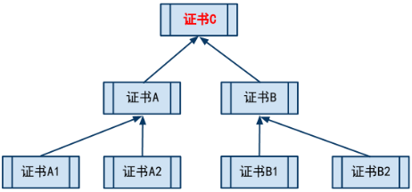
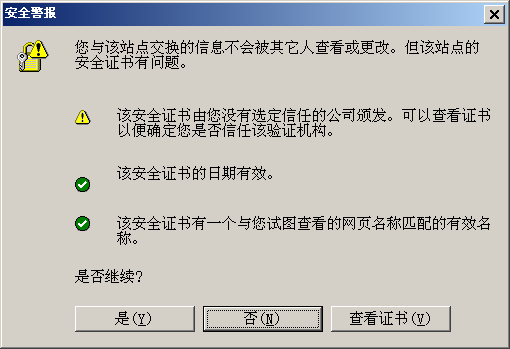
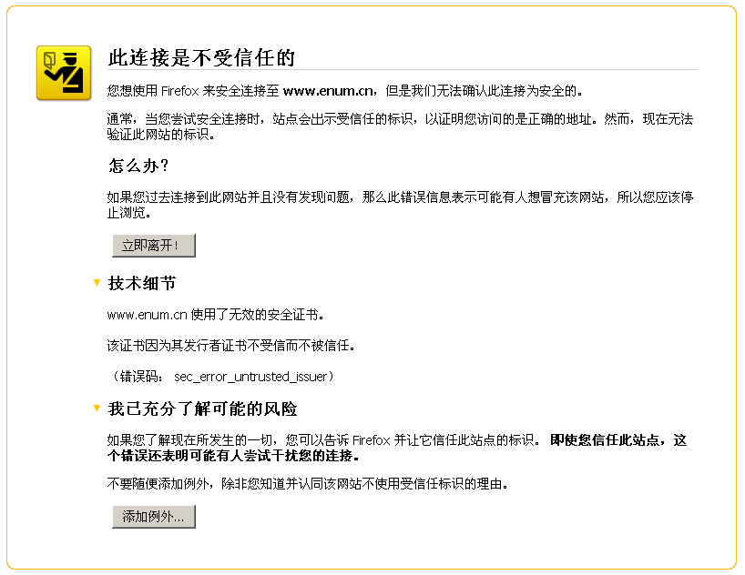
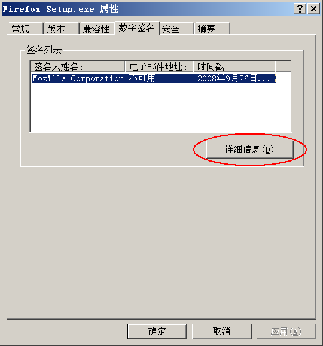
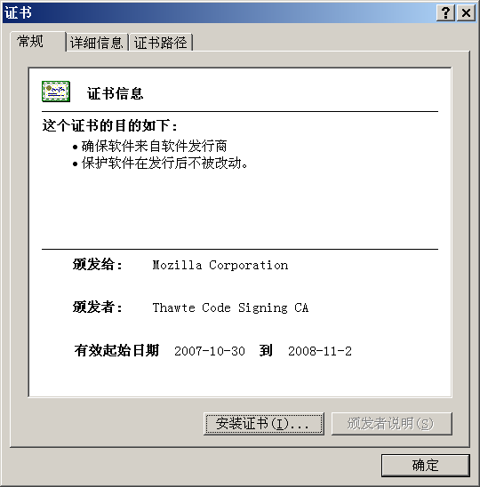
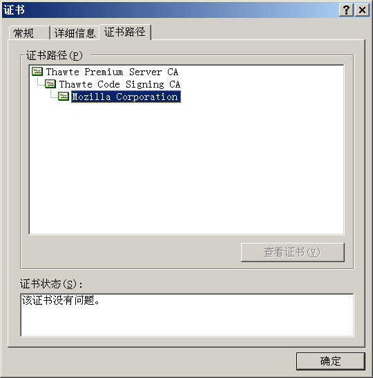

最近1-2周，关于 CNNIC 的 CA 证书问题，网上搞得沸沸扬扬。但是俺发觉，即使是一些 IT 行业的技术人员，也搞不太明白该问题的严重性（至于不懂技术的傻瓜用户，就更甭提了）。主要在于 CA 证书是一个相对专业的东东，大伙儿平时接触不多。
所以，俺打算写3个帖子：第1个用来扫盲 CA 证书的基础知识（也就是本帖）；第2个则用来揭露 CNNIC 这个老流氓的丑恶历史（在“这里”）；第3个介绍如何 CNNIC 证书的危害及清除方法（在“这里”）。为了达到普及的效果，俺会尽量用比较浅显，非技术的语言来讲清楚这事儿。
考虑到证书体系的相关知识比较枯燥、晦涩。俺先拿一个通俗的例子来说事儿。
想必大伙儿都听说过介绍信的例子吧？假设 A 公司的张三先生要到 B 公司去拜访，但是 B 公司的所有人都不认识他，他咋办捏？常用的办法是带公司开的一张介绍信，在信中说：
张三先生到了 B 公司后，把介绍信递给 B 公司的前台李四小姐。李小姐一看介绍信上有 A 公司的公章，而且A公司是经常和 B 公司有业务往来的，这位李小姐就相信张先生不是歹人了。
说到这，爱抬杠的同学会问了：万一公章是伪造的，咋办捏？在此，俺要先声明，在本例子中，先假设公章是难以伪造滴，否则俺的故事没法说下去鸟。
好，回到刚才的话题。如果和 B 公司有业务往来的公司很多，每个公司的公章都不同，那前台就要懂得分辨各种公章，非常滴麻烦。所以，有某个中介公司 C，发现了这个商机。C公司专门开设了一项“代理公章”的业务。
今后，A 公司的业务员去B公司，需要带2个介绍信：
介绍信1
含有 C 公司的公章及 A 公司的公章。并且特地注明：C 公司信任A公司。
介绍信2
仅含有 A 公司的公章，然后写上：
某些不开窍的同学会问了，这样不是增加麻烦了吗？有啥好处捏？
主要的好处在于，对于接待公司的前台，就不需要记住各个公司的公章分别是啥样子的；他/她只要记住中介公司 C 的公章即可。当他/她拿到两份介绍信之后，先对“介绍信1”的 C 公章，验明正身；确认无误之后，再比对“介绍信1”和“介绍信2”的两个 A 公章是否一致。如果是一样的，那就可以证明“介绍信2”是可以信任的了。
费了不少口水，终于说完了一个俺自认为比较通俗的例子。如果你听到到这儿，还是想不明白这个例子在说啥，那后续的内容，就不必浪费时间听了 :(
下面，俺就着上述的例子，把相关的名词，作一些解释。
“证书”洋文也叫“digital certificate”或“public key certificate”（专业的解释看“这里”）。
它是用来证明某某东西确实是某某东西的东西（是不是像绕口令？）。通俗地说，证书就好比例子里面的公章。通过公章，可以证明该介绍信确实是对应的公司发出的。
理论上，人人都可以找个证书工具，自己做一个证书。那如何防止坏人自己制作证书出来骗人捏？请看后续 CA 的介绍。
CA 是“Certificate Authority”的缩写，也叫“证书授权中心”。（专业的解释看维基百科“这里”）
它是负责管理和签发证书的第三方机构，就好比例子里面的中介——C 公司。一般来说，CA 必须是所有行业和所有公众都信任的、认可的。因此它必须具有足够的权威性。就好比A、B两公司都必须信任 C 公司，才会找 C 公司作为公章的中介。
CA 证书，顾名思义，就是CA颁发的证书。
前面已经说了，人人都可以找工具制作证书。但是你一个小破孩制作出来的证书是没啥用处的。因为你【不是】权威的 CA 机关，你自己搞的证书不具有权威性。
这就好比上述的例子里，某个坏人自己刻了一个公章，盖到介绍信上。但是别人一看，不是【受信任】的中介公司的公章，就不予理睬。坏蛋的阴谋就不能得逞啦。
文本后续提及的证书，若无特殊说明，均指 CA 证书。
在俺的例子里谈到，引入中介后，业务员要同时带两个介绍信。第一个介绍信包含了两个公章，并注明，公章C信任公章A。证书间的信任关系，就和这个类似。就是用一个证书来证明另一个证书是真实可信滴。
实际上，证书之间的信任关系，是可以嵌套的。比如，C 信任 A1，A1 信任 A2，A2 信任 A3......这个叫做证书的信任链。只要你信任链上的头一个证书，那后续的证书，都是可以信任滴。
“根证书”的洋文叫“root certificate”，专业的解释请看维基百科“这里”。为了说清楚根证书是咋回事，再来看个稍微复杂点的例子。
假设 C 证书信任 A 和 B；然后 A 信任 A1 和 A2；B 信任 B1 和 B2。则它们之间，构成如下的一个树形关系（一个倒立的树）。

处于最顶上的树根位置的那个证书，就是“根证书”。除了根证书，其它证书都要依靠上一级的证书，来证明自己。那谁来证明“根证书”可靠捏？实际上，根证书自己证明自己是可靠滴（或者换句话说，根证书是不需要被证明滴）。
聪明的同学此刻应该意识到了：根证书是整个证书体系安全的根本。所以，如果某个证书体系中，根证书出了问题（不再可信了），那么所有被根证书所信任的其它证书，也就不再可信了。这个后果是相当相当滴严重（简直可以说是灾难性的），具体细节在下一个帖子《CNNIC 证书的危害及各种清除方法》中介绍。
CA 证书的作用有很多，俺为了节省口水，只列出常用的几个。
通常，我们如果访问某些敏感的网页（比如用户登录的页面），其协议都会使用 HTTPS 而不是 HTTP。因为 HTTP 协议是明文的，一旦有坏人在偷窥你的网络通讯，他/她就可以看到网络通讯的内容（比如你的密码、银行帐号、等）；而 HTTPS 是加密的协议，可以保证你的传输过程中，坏蛋无法偷窥。
但是，千万【不要】以为，HTTPS 协议有了加密，就可高枕无忧了。俺再举一个例子来说明，光有加密是不够滴。假设有一个坏人，搞了一个假的网银的站点，然后诱骗你上这个站点。假设你又比较单纯，一不留神，就把你的帐号，口令都输入进去了。那这个坏蛋的阴谋就得逞鸟。
为了防止坏人这么干，HTTPS 协议除了有加密的机制，还有一套证书的机制。通过证书来确保，某个站点确实就是某个站点。
有了证书之后，当你的浏览器在访问某个 HTTPS 网站时，会验证该站点上的 CA 证书（类似于验证介绍信的公章）。如果浏览器发现该证书没有问题（证书被某个根证书信任、证书上绑定的域名和该网站的域名一致、证书没有过期），那么页面就直接打开；否则的话，浏览器会给出一个警告，告诉你该网站的证书存在某某问题，是否继续访问该站点？为了形象起见，下面给出 IE 和 Firefox 的抓图：


大多数知名的网站，如果用了 HTTPS 协议，其证书都是可信的（也就不会出现上述警告）。所以，今后你如果上某个知名网站，发现浏览器跳出上述警告，你就要小心啦！
证书除了可以用来验证某个网站，还可以用来验证某个文件是否被篡改。具体是通过证书来制作文件的数字签名。制作数字签名的过程太专业，咱就不说了。后面专门告诉大家如何验证文件的数字签名。考虑到大多数人用 Windows 系统，俺就拿 Windows 的例子来说事儿。
比如，俺手头有一个 Firefox 的安装文件（带有数字签名）。当俺查看该文件的属性，会看到如下的界面。眼神好的同学，会注意到到上面有个“数字签名”的标签页。如果没有出现这个标签页，就说明该文件没有附带数字签名。

选择该标签页，看到如下界面。
顺便说一下，某些数字签名中没有包含“邮件地址”，那么这一项会显示“不可用”；同样的，某些数字签名没有包含“时间戳”，也会显示“不可用”。不要紧张，这里显示的“不可用”跟数字签名的有效性【没关系】。

一般来说，签名列表中，有且仅有一个签名。选中它，点“详细信息”按钮。跳出如下界面：
通常这个界面会显示一行字：“

如果该文件被篡改过了（比如，感染了病毒、被注入木马），那么对话框会出现一个警告提示“该数字签名无效”（图中红圈标出）。界面如下：

不论签名是否正常，你都可以点“查看证书”按钮。这时候，会跳出证书的对话框。如下：


从后一个界面，可以看到俺刚才说的证书信任链。图中的信任链有3层：
第1层是根证书（Thawte Premium Server CA）
第2层是 Thawte 专门用来签名的证书
第3层是 Mozilla 自己的证书
目前大多数知名的公司（或组织机构），其发布的可执行文件（比如软件安装包、驱动程序、安全补丁），都带有数字签名。你可以自己去看一下。
建议大伙儿在安装软件之前，都先看看是否有数字签名？如果有，就按照上述步骤验证一把。一旦数字签名是坏的，那可千万别装。
费了半天口水，大致介绍了 CA 证书相关的概念。想更深入了解这方面知识的同学，可以找些信息安全或密码学方面的资料，继续钻研。
如果哪个同学觉得俺有说得不对的地方，或者有需要补充的内容，欢迎到本文留言。
俺博客上，和本文相关的帖子（需翻墙）：
《扫盲 HTTPS 和 SSL/TLS 协议》（系列）
《CNNIC 证书的危害及各种清除方法》
《CNNIC 干过的那些破事儿》
所以，俺打算写3个帖子：第1个用来扫盲 CA 证书的基础知识（也就是本帖）；第2个则用来揭露 CNNIC 这个老流氓的丑恶历史（在“这里”）；第3个介绍如何 CNNIC 证书的危害及清除方法（在“这里”）。为了达到普及的效果，俺会尽量用比较浅显，非技术的语言来讲清楚这事儿。
★先说一个通俗的例子
考虑到证书体系的相关知识比较枯燥、晦涩。俺先拿一个通俗的例子来说事儿。
◇普通的介绍信
想必大伙儿都听说过介绍信的例子吧？假设 A 公司的张三先生要到 B 公司去拜访，但是 B 公司的所有人都不认识他，他咋办捏？常用的办法是带公司开的一张介绍信，在信中说：
兹有张三先生前往贵公司办理业务，请给予接洽......云云。然后在信上敲上A公司的公章。
张三先生到了 B 公司后，把介绍信递给 B 公司的前台李四小姐。李小姐一看介绍信上有 A 公司的公章，而且A公司是经常和 B 公司有业务往来的，这位李小姐就相信张先生不是歹人了。
说到这，爱抬杠的同学会问了：万一公章是伪造的，咋办捏？在此，俺要先声明，在本例子中，先假设公章是难以伪造滴，否则俺的故事没法说下去鸟。
◇引入中介机构的介绍信
好，回到刚才的话题。如果和 B 公司有业务往来的公司很多，每个公司的公章都不同，那前台就要懂得分辨各种公章，非常滴麻烦。所以，有某个中介公司 C，发现了这个商机。C公司专门开设了一项“代理公章”的业务。
今后，A 公司的业务员去B公司，需要带2个介绍信：
介绍信1
含有 C 公司的公章及 A 公司的公章。并且特地注明：C 公司信任A公司。
介绍信2
仅含有 A 公司的公章，然后写上：
兹有张三先生前往贵公司办理业务，请给予接洽......云云。
某些不开窍的同学会问了，这样不是增加麻烦了吗？有啥好处捏？
主要的好处在于，对于接待公司的前台，就不需要记住各个公司的公章分别是啥样子的；他/她只要记住中介公司 C 的公章即可。当他/她拿到两份介绍信之后，先对“介绍信1”的 C 公章，验明正身；确认无误之后，再比对“介绍信1”和“介绍信2”的两个 A 公章是否一致。如果是一样的，那就可以证明“介绍信2”是可以信任的了。
★相关【专业术语】的解释
费了不少口水，终于说完了一个俺自认为比较通俗的例子。如果你听到到这儿，还是想不明白这个例子在说啥，那后续的内容，就不必浪费时间听了 :(
下面，俺就着上述的例子，把相关的名词，作一些解释。
◇“证书”是啥？
“证书”洋文也叫“digital certificate”或“public key certificate”（专业的解释看“这里”）。
它是用来证明某某东西确实是某某东西的东西（是不是像绕口令？）。通俗地说，证书就好比例子里面的公章。通过公章，可以证明该介绍信确实是对应的公司发出的。
理论上，人人都可以找个证书工具，自己做一个证书。那如何防止坏人自己制作证书出来骗人捏？请看后续 CA 的介绍。
◇“CA”是啥？
CA 是“Certificate Authority”的缩写，也叫“证书授权中心”。（专业的解释看维基百科“这里”）
它是负责管理和签发证书的第三方机构，就好比例子里面的中介——C 公司。一般来说，CA 必须是所有行业和所有公众都信任的、认可的。因此它必须具有足够的权威性。就好比A、B两公司都必须信任 C 公司，才会找 C 公司作为公章的中介。
◇“CA 证书”是啥？
CA 证书，顾名思义，就是CA颁发的证书。
前面已经说了，人人都可以找工具制作证书。但是你一个小破孩制作出来的证书是没啥用处的。因为你【不是】权威的 CA 机关，你自己搞的证书不具有权威性。
这就好比上述的例子里，某个坏人自己刻了一个公章，盖到介绍信上。但是别人一看，不是【受信任】的中介公司的公章，就不予理睬。坏蛋的阴谋就不能得逞啦。
文本后续提及的证书，若无特殊说明，均指 CA 证书。
◇啥是证书之间的【信任关系】？
在俺的例子里谈到，引入中介后，业务员要同时带两个介绍信。第一个介绍信包含了两个公章，并注明，公章C信任公章A。证书间的信任关系，就和这个类似。就是用一个证书来证明另一个证书是真实可信滴。
◇啥是证书的【信任链】？
实际上，证书之间的信任关系，是可以嵌套的。比如，C 信任 A1，A1 信任 A2，A2 信任 A3......这个叫做证书的信任链。只要你信任链上的头一个证书，那后续的证书，都是可以信任滴。
◇啥是【根证书】？
“根证书”的洋文叫“root certificate”，专业的解释请看维基百科“这里”。为了说清楚根证书是咋回事，再来看个稍微复杂点的例子。
假设 C 证书信任 A 和 B；然后 A 信任 A1 和 A2；B 信任 B1 和 B2。则它们之间，构成如下的一个树形关系（一个倒立的树）。
处于最顶上的树根位置的那个证书，就是“根证书”。除了根证书，其它证书都要依靠上一级的证书，来证明自己。那谁来证明“根证书”可靠捏？实际上，根证书自己证明自己是可靠滴（或者换句话说，根证书是不需要被证明滴）。
聪明的同学此刻应该意识到了：根证书是整个证书体系安全的根本。所以，如果某个证书体系中，根证书出了问题（不再可信了），那么所有被根证书所信任的其它证书，也就不再可信了。这个后果是相当相当滴严重（简直可以说是灾难性的），具体细节在下一个帖子《CNNIC 证书的危害及各种清除方法》中介绍。
★证书有啥用？
CA 证书的作用有很多，俺为了节省口水，只列出常用的几个。
◇验证网站是否可信（针对 HTTPS）
通常，我们如果访问某些敏感的网页（比如用户登录的页面），其协议都会使用 HTTPS 而不是 HTTP。因为 HTTP 协议是明文的，一旦有坏人在偷窥你的网络通讯，他/她就可以看到网络通讯的内容（比如你的密码、银行帐号、等）；而 HTTPS 是加密的协议，可以保证你的传输过程中，坏蛋无法偷窥。
但是，千万【不要】以为，HTTPS 协议有了加密，就可高枕无忧了。俺再举一个例子来说明，光有加密是不够滴。假设有一个坏人，搞了一个假的网银的站点，然后诱骗你上这个站点。假设你又比较单纯，一不留神，就把你的帐号，口令都输入进去了。那这个坏蛋的阴谋就得逞鸟。
为了防止坏人这么干，HTTPS 协议除了有加密的机制，还有一套证书的机制。通过证书来确保，某个站点确实就是某个站点。
有了证书之后，当你的浏览器在访问某个 HTTPS 网站时，会验证该站点上的 CA 证书（类似于验证介绍信的公章）。如果浏览器发现该证书没有问题（证书被某个根证书信任、证书上绑定的域名和该网站的域名一致、证书没有过期），那么页面就直接打开；否则的话，浏览器会给出一个警告，告诉你该网站的证书存在某某问题，是否继续访问该站点？为了形象起见，下面给出 IE 和 Firefox 的抓图：
大多数知名的网站，如果用了 HTTPS 协议，其证书都是可信的（也就不会出现上述警告）。所以，今后你如果上某个知名网站，发现浏览器跳出上述警告，你就要小心啦！
◇验证某文件是否可信（是否被篡改）
证书除了可以用来验证某个网站，还可以用来验证某个文件是否被篡改。具体是通过证书来制作文件的数字签名。制作数字签名的过程太专业，咱就不说了。后面专门告诉大家如何验证文件的数字签名。考虑到大多数人用 Windows 系统，俺就拿 Windows 的例子来说事儿。
比如，俺手头有一个 Firefox 的安装文件（带有数字签名）。当俺查看该文件的属性，会看到如下的界面。眼神好的同学，会注意到到上面有个“数字签名”的标签页。如果没有出现这个标签页，就说明该文件没有附带数字签名。
选择该标签页，看到如下界面。
顺便说一下，某些数字签名中没有包含“邮件地址”，那么这一项会显示“不可用”；同样的，某些数字签名没有包含“时间戳”，也会显示“不可用”。不要紧张，这里显示的“不可用”跟数字签名的有效性【没关系】。
一般来说，签名列表中，有且仅有一个签名。选中它，点“详细信息”按钮。跳出如下界面：
通常这个界面会显示一行字：“
该数字签名正常”（图中红圈标出）。如果有这行字，就说明该文件从出厂到你手里，中途没有被篡改过（是原装滴、是纯洁滴）。
如果该文件被篡改过了（比如，感染了病毒、被注入木马），那么对话框会出现一个警告提示“该数字签名无效”（图中红圈标出）。界面如下：
不论签名是否正常，你都可以点“查看证书”按钮。这时候，会跳出证书的对话框。如下：
从后一个界面，可以看到俺刚才说的证书信任链。图中的信任链有3层：
第1层是根证书（Thawte Premium Server CA）
第2层是 Thawte 专门用来签名的证书
第3层是 Mozilla 自己的证书
目前大多数知名的公司（或组织机构），其发布的可执行文件（比如软件安装包、驱动程序、安全补丁），都带有数字签名。你可以自己去看一下。
建议大伙儿在安装软件之前，都先看看是否有数字签名？如果有，就按照上述步骤验证一把。一旦数字签名是坏的，那可千万别装。
★总结
费了半天口水，大致介绍了 CA 证书相关的概念。想更深入了解这方面知识的同学，可以找些信息安全或密码学方面的资料，继续钻研。
如果哪个同学觉得俺有说得不对的地方，或者有需要补充的内容，欢迎到本文留言。
俺博客上，和本文相关的帖子（需翻墙）：
《扫盲 HTTPS 和 SSL/TLS 协议》（系列）
《CNNIC 证书的危害及各种清除方法》
《CNNIC 干过的那些破事儿》
版权声明
本博客所有的原创文章，作者皆保留版权。转载必须包含本声明，保持本文完整，并以超链接形式注明作者编程随想和本文原始地址：
https://program-think.blogspot.com/2010/02/introduce-digital-certificate-and-ca.html
本博客所有的原创文章，作者皆保留版权。转载必须包含本声明，保持本文完整，并以超链接形式注明作者编程随想和本文原始地址：
https://program-think.blogspot.com/2010/02/introduce-digital-certificate-and-ca.html